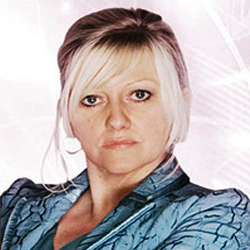

| Home | The Doctors | The Companions | The Villains |
| [banner] | |||
| cf
Jackie Tyler HomepageJackie Tyler is a fictional character played by Camille Coduri in the British science fiction television series Doctor Who. The character, a resident of contemporary London, is introduced in the first episode of the 2005 revial series of Doctor Who, 'Rose'. Living in London as the widowed mother of Rose Tyler, a travelling companion of the alien time traveller the doctor. Jackie is a recurring character during the 2005 and 2006 series' of the show, and later makes one-off appearances in 2008 and 2010. The character has also appeared in expanded universe material such as the Doctor WhoNew Series Adventures novels and the Doctor Who Magazine comic strip. Within the series narrative, Jackie lives alone with Rose until her daughter leaves to travel through time and space with the Doctor. Jackie's feeling of loss and of being left behind is explored in subsequent episodes. As the character is brought into danger by her proximity to the Doctor, she resents his influence over Rose. However, once he undergoes a regeneration, effectively becoming a new man, Jackie has a more cordial relationship with him. The character is written out at the end of the 2006 series along with Rose, in a storyline which sees her united in a parallel universewith an alternate version of her deceased husband. In reviving the television series after a sixteen-year hiatus (1989–2005), executive producer provided a believable background for the Doctor's companion and a context for her travels to the past and future. The character of Jackie was created, along with Rose's on/off boyfriend Mickey, to keep the series grounded in reality. In writing Jackie, Davies incorporated both comic and tragic elements. Following the departure of the Tyler family, Davies was keen to bring Jackie back alongside Rose for future appearances. Reviewers generally reacted positively to the development of the character, though some identified unlikeable traits. |